| 日付 | 2021年7月31日（土） - 2021年8月7日（土） | ||||||||
|---|---|---|---|---|---|---|---|---|---|
| 山域 | 東北の山 | ||||||||
| メンバー | 家族（妻、長女・10歳、長男・8歳） | ||||||||
| 山行形態 | 子連れ7泊8日キャンプ | ||||||||
| アクセス | 車、バス | ||||||||
| ルート (Map3) |
|
6日目
もともと木金の天気予報は不安定で今一だったが、最終的には晴予報で落ち着いた。
下界から岩手山がくっきりと見える。今日はこの岩手山登山に挑戦してみる。
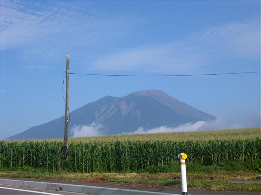
馬返し登山口に到着。標高630m。
7時前に着いたのだが、もう準備を終えて山に入っていく人も見える。
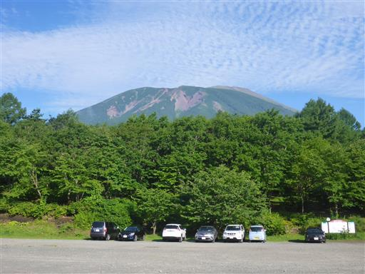
岩手山の標高は2038m。単純標高差でも1400mあり、コースタイムは往復8時間。
子供たちにとっては初の標高差であり、気合を入れて出発する。
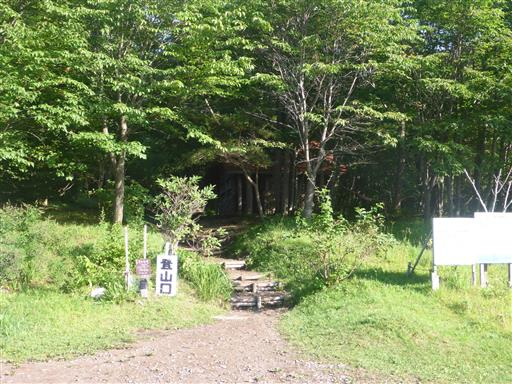
歩き始めてすぐに広場に到着する。トイレ、水場がある。
ここまで車で入っている人もいるようだ。
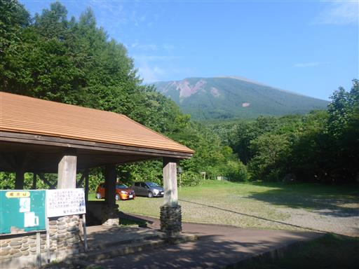
鬼又清水。冷たい水が豊富に出ている。
水を飲み、手拭いを冷やして登山の準備をする。
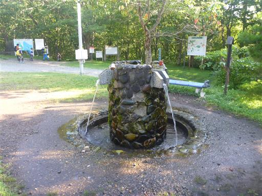
この辺りは自衛隊の演習場がある。大砲の音が結構うるさい。
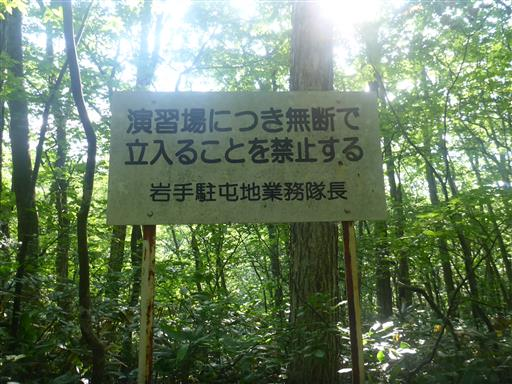
最初はツアー登山者の後ろを着いていくが、速度が合わないため途中で追い抜く。
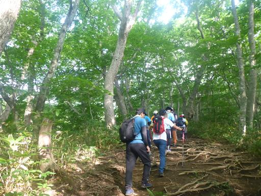
周囲はブナ林だ。
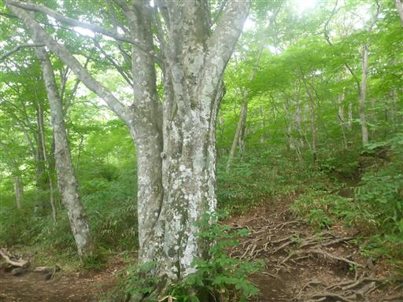
40分歩いてようやく0.5合目。いくらなんでも一合目が遠すぎだろう。
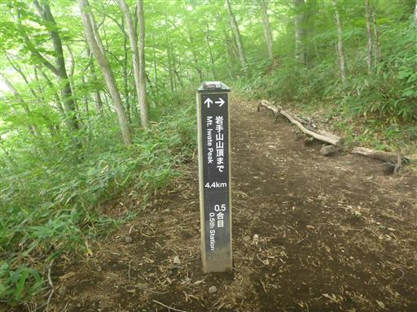
しばらく歩くと一合目。ほっと一息。
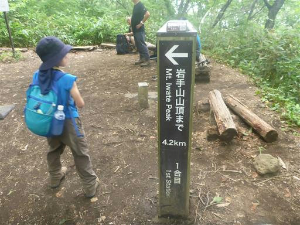
側に小さな祠がある。
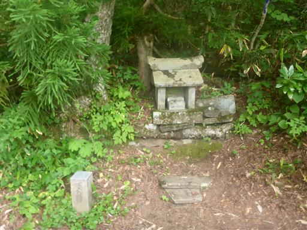
朝は快晴だったが、歩き始めると曇り空。
景色が見えないのは残念だが、暑くないのは助かる。
本日の下界の気温は36度予想だ。
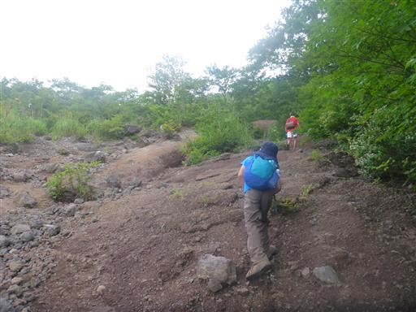
ホツツジの花。
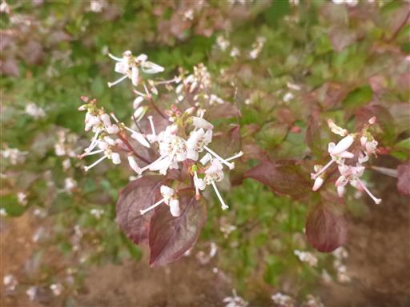
最初は傾斜が緩かったが、岩がちな地形になってきて傾斜がきつくなってくる。
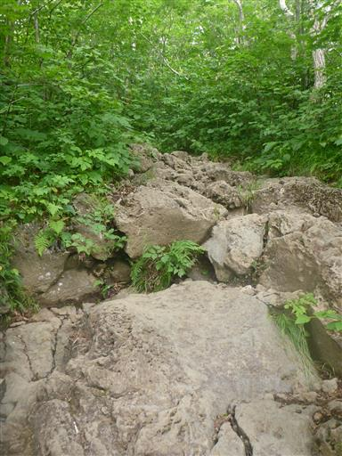
定期的に飲み物を飲む。
今回は一人2本、凍った飲料を準備、その他の飲み物や体を冷やす水などを持参。
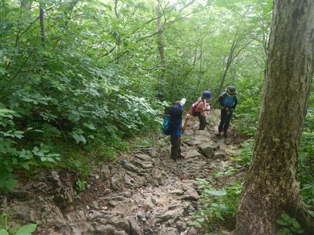
登りは旧道を選択。明るく開けた場所に出てくる。
若干青空が覗いている。
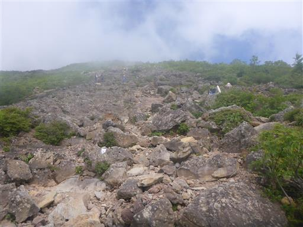
四合目を通過。
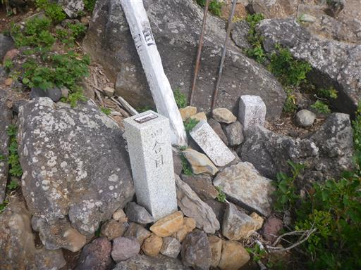
息子はぐんぐん登って行く。
目の前に人がいると、追い抜こうと頑張ってスピードを上げる。
登山にはあまり向いていない性格だ。
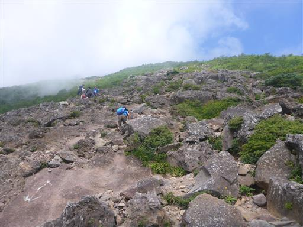
この植物は何だろう？
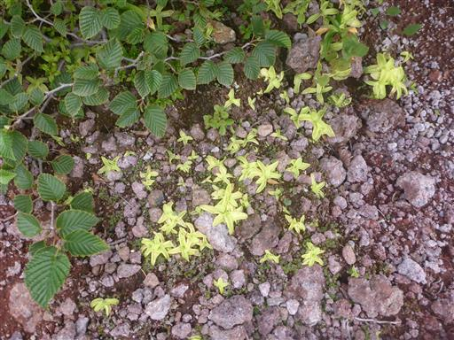
五合目。どういう間隔で合目があるのかは分からないが、半分程度は登ったことになる。
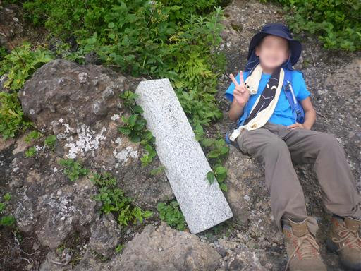
簡単な岩場。ロープがあるが使うまでもない。
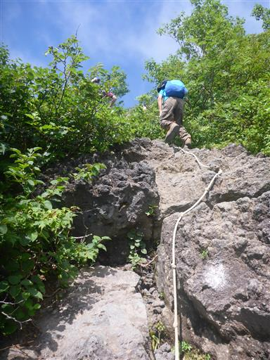
雲の隙間からガレ場が見えるが、すっきりとは見通せない。
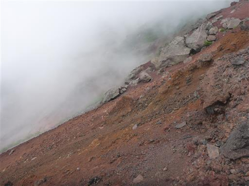
巨大な岩。この裏が六合目だ。
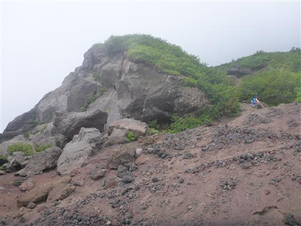
ウスユキソウ。
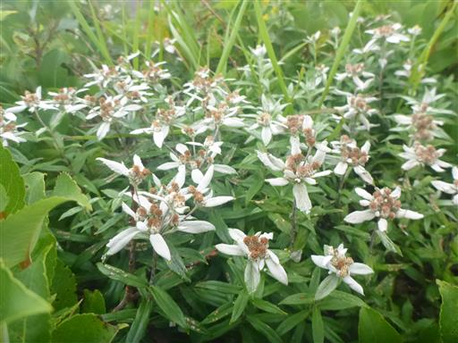
日が差してきたが、樹林帯の中なので直射日光を避けられる。
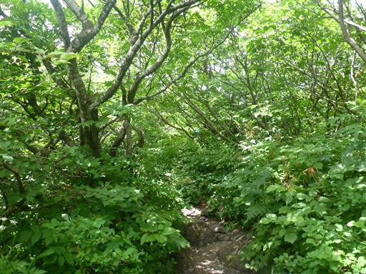
七合目に到着。ここに来て山頂が姿を現す。
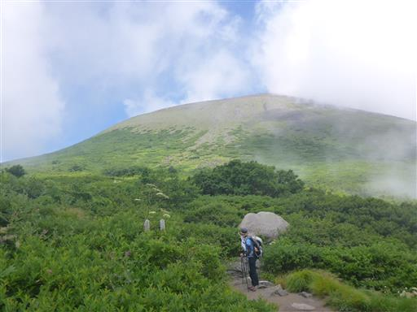
ここは旧道と新道の合流点。足元に小さな祠がある。
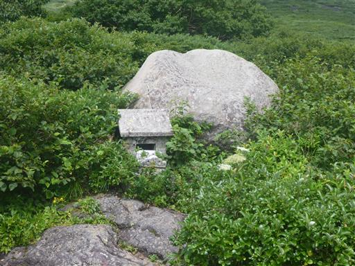
八合目避難小屋が見えてきた。
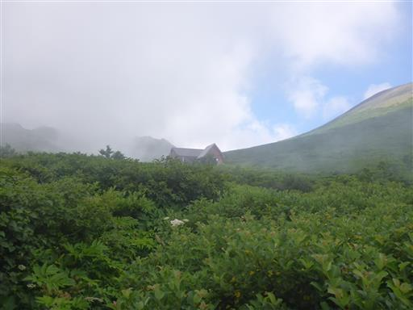
八合目避難小屋に到着。
七合目～八合目は傾斜がほとんどなく、あっという間だ。
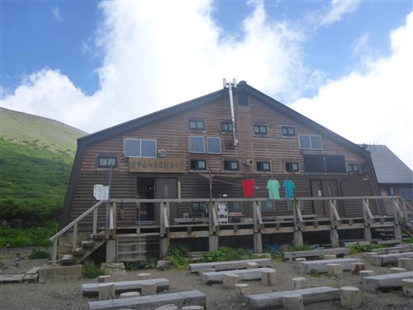
御成清水。ここでも水がたくさん出ている。冷たくておいしい。
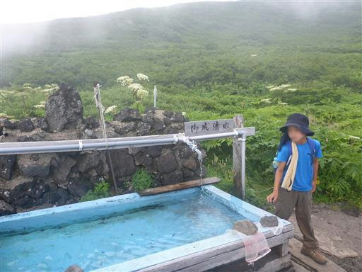
八合目を出発。この辺りはお花畑がきれいだ。
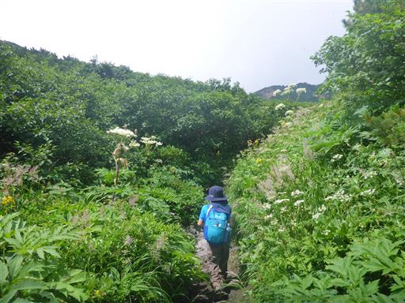
大きな山体の岩手山山頂部。登山道は中腹で二手に分かれている。
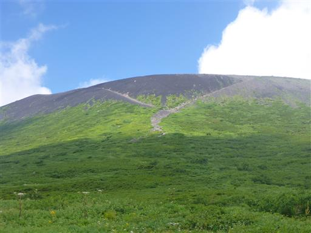
この辺りもゆったりとした地形だ。ちょうどここは岩手山山頂部と外輪山との間にある平地だ。
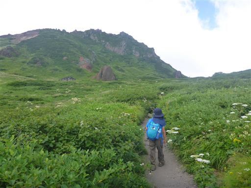
不動平に到着。ここにも避難小屋がある。
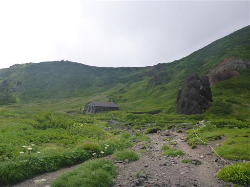
二手に分かれた登山道は山頂に一直線に通じる左の道を選択。
しかしこれが大失敗。足場は砂で力が入らず、傾斜も急でなかなか前に進まない。
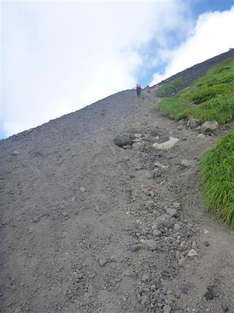
眼下を見下ろす。左端に見えるのは八合目避難小屋だ。
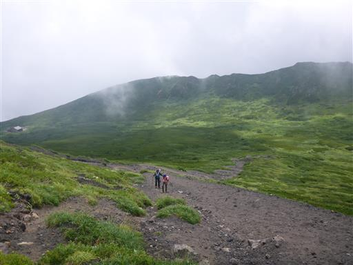
岩手山の山頂部に到着。岩手山の噴火口が目の前に現れる。
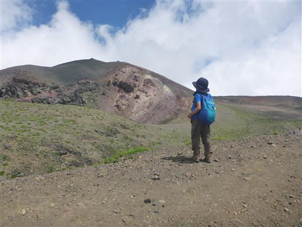
ここにもイワブクロの花が咲いている。他では全く見ないのに東北の山ではよく見かける。
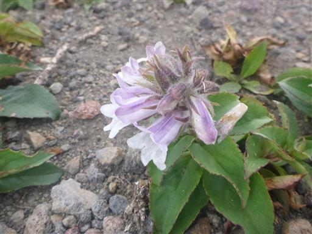
ここからはお鉢巡り。ぐるっと歩いて一番標高の高い山頂部を目指す。
一定間隔で石仏が並んでいる。信仰の山だったのだろう。
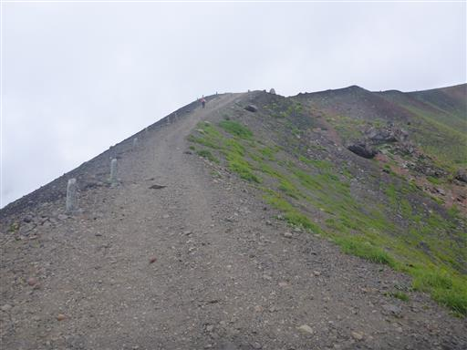
ここでもクジャクチョウを発見。やっとゆっくりと羽を開いてくれた。
美しいと言ってよいか分からないが、ずいぶん派手な蝶だ。
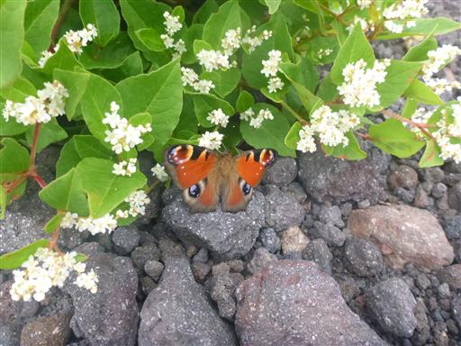
岩手山山頂に到着。標高2038m。
登山口を出発してちょうど4時間半かかった。
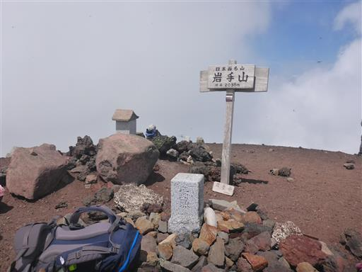
山頂は雲に覆われ展望はほとんどないが、山頂部の展望は開ける。
大きな噴火口と、その中に中央火口丘（妙高岳）が見える。
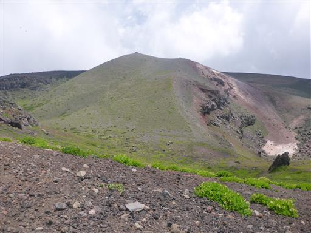
雲が切れて、下界の田園風景が少しだけ見える。
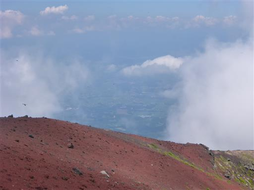
山頂の風景。平日だがそこそこ登山者がいる。
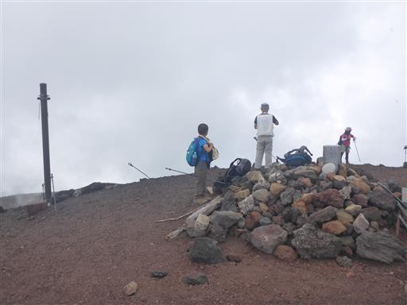
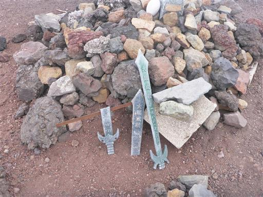
昼食後は虫で遊ぶ。
オニヤンマの死骸を発見。アキアカネと比較してみたが足、目など桁外れに大きい。
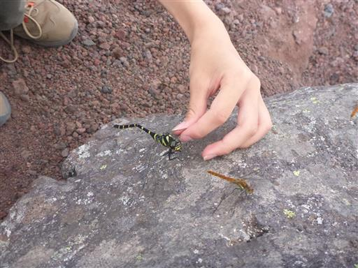
ハサミツノカメムシ。他にセミなども発見。
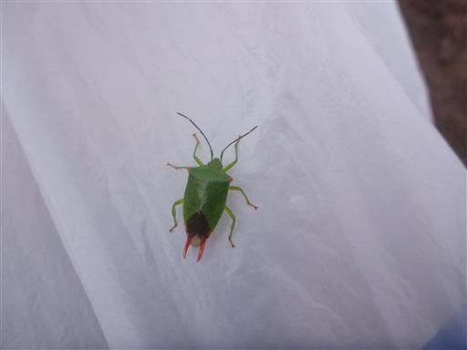
下山開始。お鉢巡りの残りを歩く。
眼下には雲に覆われた鋭い尾根が見える。

少しだけだが砂礫地にコマクサの花が見られる。
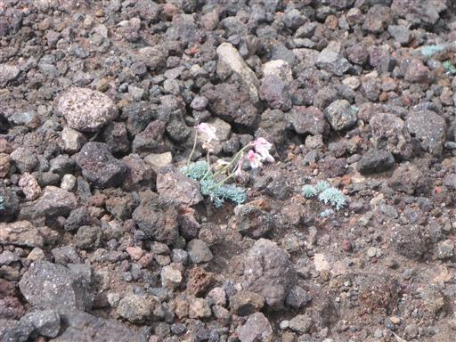
岩陰に咲くイワギキョウ。
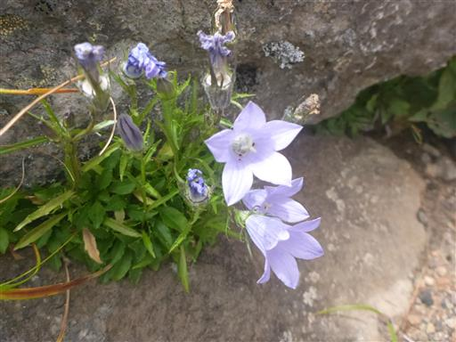
お鉢巡りの登山道。アップダウンはあまり多くない。

振り返ると一際高い山頂が見える。
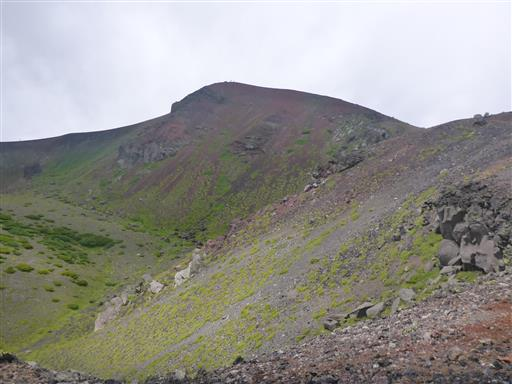
途中で、火口縁と火口に下りる道に分かれたため、火口に下りる道を選択。
妙高岳の斜面に点々と白い花が咲いている。
岩に剣が突き刺さっている。雷が落ちそうだ。
噴火口にある岩手山神社奥宮。
何かの頭がいっぱい並んでいる。一体何だろう？
お鉢巡りを一周したら下山開始。
頭上は雲だが、眼下にも雲海が広がる。
七合目の分岐点。復路は新道を選択。
だいぶ下界の視界が広がってきた。
延々と続く下り坂。息子がこけて膝を強打し、しばらくストップ。
様子を見ながらゆっくり下る。
子守り岩。そう見えなくもない。

だいぶ標高が下がった。遠くに見える山は姫神山だろうか？
豆腐岩。ちょっと無理がある。
登山道が狭い。
この葉っぱは病気なのだろうか？
お疲れさまでした。
無事下山。
岩手山は岩手のシンボルだけあって立派な、そして大変な山だった。
登山者の数はそこそこ多く、富士山と同じで一生に一度は岩手山へ、という感じなのだろうか？
1年前の計画時には岩手山は無理だろうと思っていたが、1年延期になったことで
ある程度余裕をもって登ることができ、結果的には良かった。
帰りの車、御神坂登山口付近で熊を発見する。
キャンプ場に戻ってくる。見えているのは岩手山の外輪山か手前の尾根辺りだろうか？
夕方になると雲も消えて、すっきりと見渡せる。
避難小屋に泊まっていれば素晴らしい展望が広がっただろう。